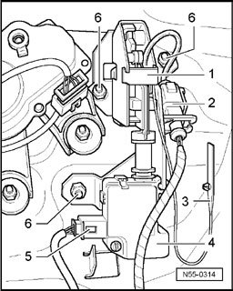

Latch For Hinged Window, Removing and Installing
Latch For Hinged Window, Removing And Installing
Removing
- First unlock hinged window, then open rear lid.

- Remove tailgate trim
- Unclip emergency release -3- from rear lid.
Emergency release can only be operated with trim removed.
- Disconnect harness connector -2- for hinged window lock -1- and harness connector -5- for unlocking unit -4-.
- Unscrew hex nuts -6- for lock -1-.
Installing
Installation is performed in the reverse order of removal.
- Tightening torque: Hex nuts -6- 8 Nm.